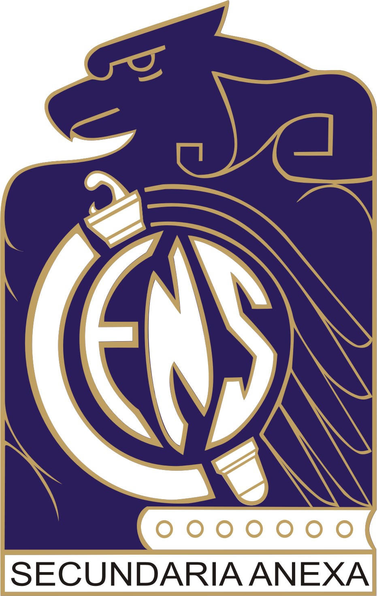
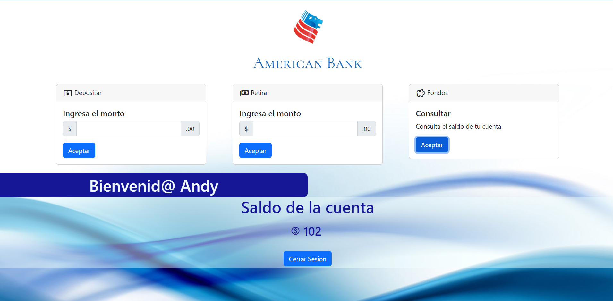
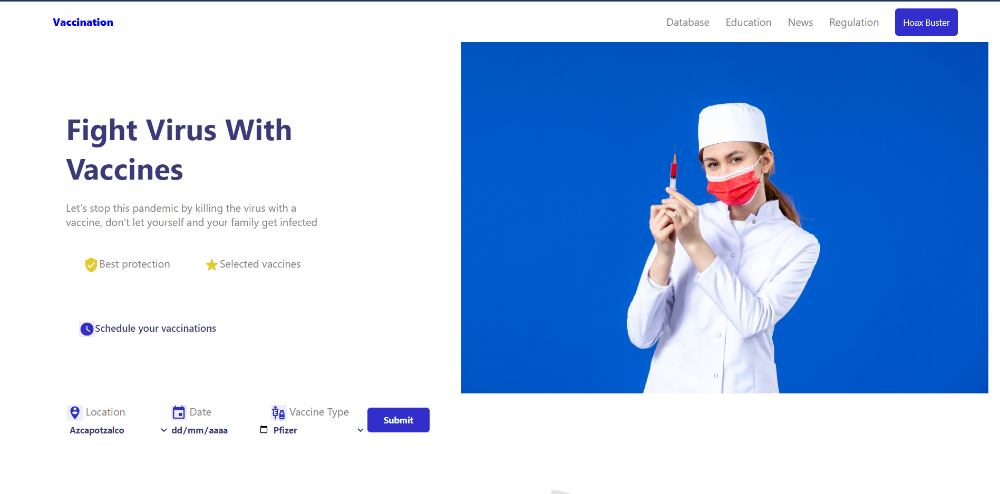
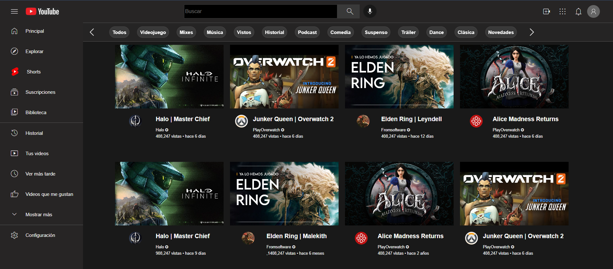
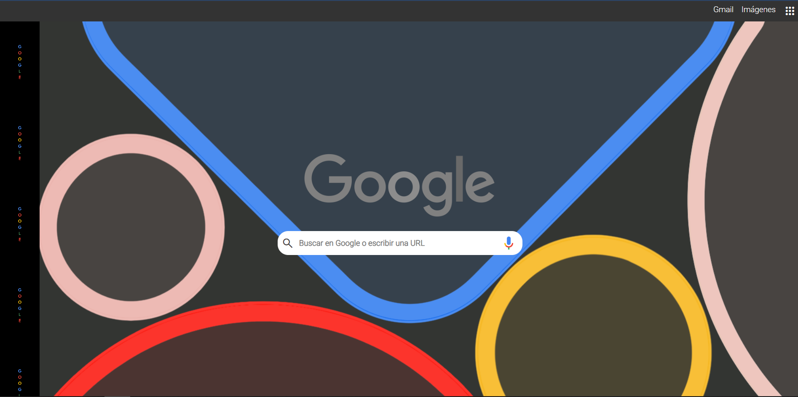
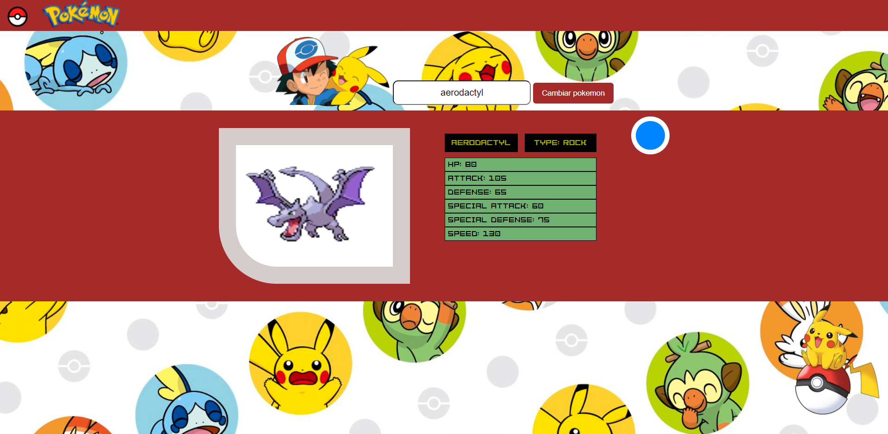

A continuacion te presento información sobre mi formación académica y proyectos que he desarrollado en programas impartidos por Innovación, Oracle, Dev.f o proyectos personales.
Estoy en constante aprendizaje y actualización para mejorar mis habilidades informáticas en general, ya que me gustaría incursionar en el mundo de la ciberseguridad.
Tengo 23 años, soy mexicana y actualmente estudio Ingeniería en Informática.
Estoy en formación para convertirme en Fullstack Web Developer.
Mi formación extracurricular consta de cursos y diplomados que he tenido la oportunidad de cursar con empresas como Miscrosoft y Oracle.
Actualmente me encuentro cursando el Master en Coding en Dev.F y participando en el proyecto Oracle ONE en Alura Latam.
Skills
C++
Javascript
HTML
CSS
jQuery
Bootstrap
Python
Mis inicios en programación
PSeInt
Visual Studio Code
Matlab
Scratch
Hobbies
stadia_controller
Videogames
movie
Series & Movies
headphones
Music
photo_camera
Photography
terminal
Coding
Soft Skills
Autodidacta
Compromiso
Determinación
Persistencia
Honestidad
Formación académica
Mi Educación basica la cursé en una primaria particular religiosa llamada "Fray Luis de León" para después ingresar a la Escuela Secundaria Anexa
a la Normal Superior de México (ESANS).
Estudié la mayor parte de mi bachillerato en el CECyT 9 del IPN "Juan de Dios Bátiz", en la carrera técnica de Sistemas Digitales.
Tengo el título de técnica en Infórmatica por parte del colegio de Bachilleres.
Me encuentro estudiando Ingeniería Informática en UPIICSA.

Cursos
Simultaneamente tomo cursos y/o diplomados extracurriculares con Oracle, Microsoft, Dev.f y Cisco.
Proyectos
He participado en certificaciones y cursos impartidos por Microsoft,
específicamente en el ciclo especializado, programa de Inovacción del cual obtuve la cerftificación AZ-900
sobre el uso de Azure.
Participé en el curso para Fullstack Developer, en el que desarrolle proyectos como:
Pokedex
Clon de página para agendar vacunación
Página para una pastelería

Web Site Banco
Desarrollado como proyecto del Modulo 2 del Master en coding de Dev.f.

Diseño página vacunación
Desarrollado en el programa de Innovacción de formación para Developers.

Clon Youtube
Desarrollado como proyecto del Modulo 1 del Master en Coding de Dev.f.

Clon Google
Desarrollado como ejercicio del Modulo 1 del Master en Coding de Dev.f.

Pokedex
Desarrollado en el programa de Innovaccion de formación para Developers (consulta API).

 C++
C++
 Javascript
Javascript
 HTML
HTML
 CSS
CSS